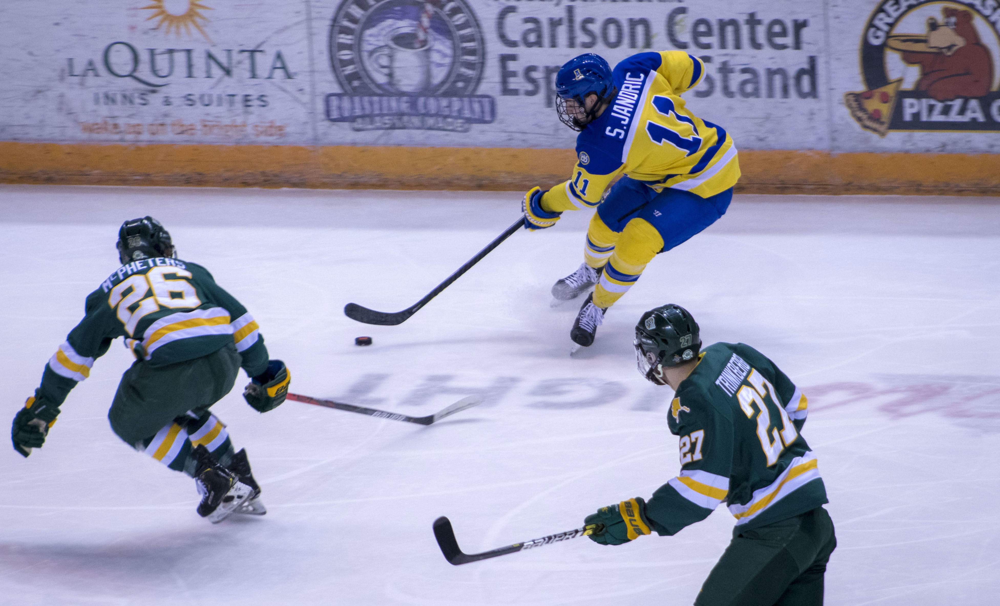
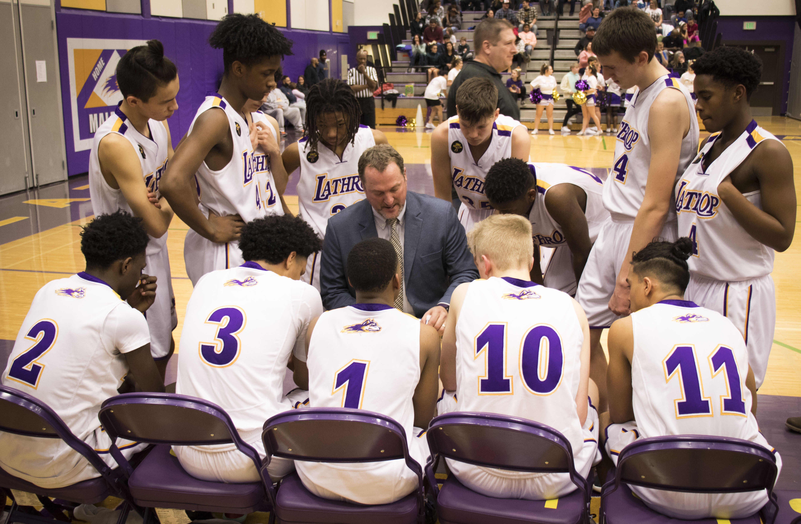
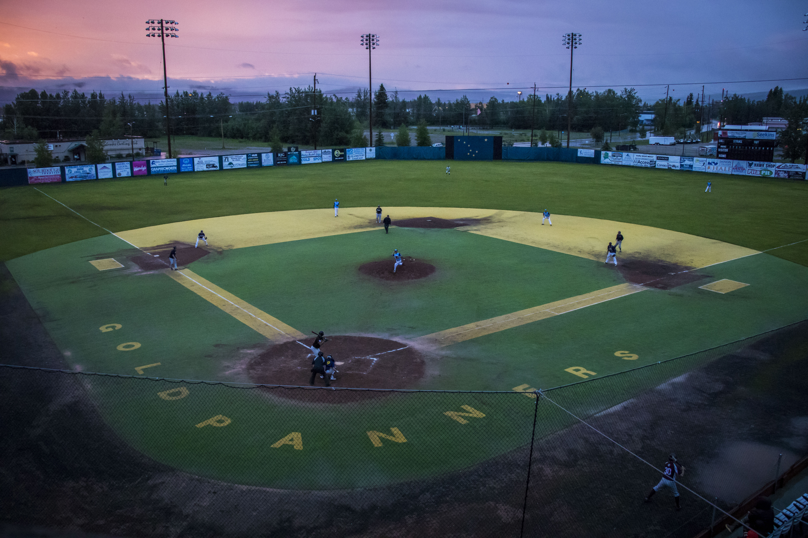

My Year in Alaska
Six weeks of sports pages ✅ pic.twitter.com/VsbKDAaWNJ
— Laura Stickells (@LauraStickells) July 29, 2019
Covering sports at the top of the world
When I made the six-day drive up the Alaskan Highway to Fairbanks, Alaska I didn't know what to expect to expect, but I hoped to find cool stories, unique experiences and fun adventures.
From covering a 1,000-mile sled dog race in 30-below weather to wrapping my year up with a baseball game played through the night lit only by the light of Alaska’s Midnight Sun, I experienced more unique life experiences in one year than many have in a lifetime. I was also fortunate to work with hockey coaches at the University of Alaska Fairbanks and the Fairbanks Ice Dogs NAHL Hockey team who were patient with a young sportswriter whose prior knowledge of the sport was limited to watching Miracle a few times. My first game I could hardly follow the puck and while I'm still not nearly where I hope to be, I'm miles ahead of where I started and I think I might even have a new favorite sport.
I am so grateful I had mentors who encouraged me to take this opportunity when I was a little nervous to do so, and even more grateful for the athletes who shared their stories with me this year, making the small leap of faith totally worth it. I hope to have a long and successful career in this industry -- fingers crossed I'll even make it to a Super Bowl or Stanley Cup Finals one day -- but the year I spent covering sports in Alaska will always hold a very special place in my heart. Below are some of my favorite stories from the year I spent taking on the last frontier.

Yukon Quest
The Yukon Quest, which alternates starting and finishing between Fairbanks and Whitehorse, Yukon each year is one of two 1,000-mile sled dog races in Alaska. While its more famous counterpart, the Iditarod, is bettter known in the Lower-48, the Yukon Quest is considered by many in the mushing community to be the more difficult contest. With fewer checkpoints and a harsher climate only the toughest teams make it to the finish.

Hockey
In 2020 the University of Alaska Fairbanks' Division I hockey team had its best season since __ and the Fairbanks Ice Dogs were leading the North American Hockey League and seemed destined for their __ Robertson Cup Finals in __ years before COVID-19 brought an abrupt to the season.

UAF and Preps
In addition to hockey, the University of Alaska Fairbanks also supports DI co-ed rifle as well as DII men's and women's cross country running and skiing, men's and women's basketball, women's volleyball and women's swimming. The Fairbanks North Star Borough is also home to seven high schools, each with its own slate of teams, rounding out Interior Alaska's sports scene.

Only in Alaska
Baseball at midnight, the Northernmost Rodeo in America, stock car racing and even ear pulling -- Fairbanks has it all.
Yukon Quest
The Yukon Quest, which alternates starting and finishing between Fairbanks and Whitehorse, Yukon each year is one of two 1,000-mile sled dog races in Alaska. While its more famous counterpart, the Iditarod, is bettter known in the Lower-48, the Yukon Quest is considered by many in the mushing community to be the more difficult contest. With fewer checkpoints and a harsher climate only the toughest teams make it to the finish.
Hockey
In 2020 the University of Alaska Fairbanks' Division I hockey team had its best season since __ and the Fairbanks Ice Dogs were leading the North American Hockey League and seemed destined for their __ Robertson Cup Finals in __ years before COVID-19 brought an abrupt to the season.
UAF and Preps
In addition to hockey, the University of Alaska Fairbanks also supports DI co-ed rifle as well as DII men's and women's cross country running and skiing, men's and women's basketball, women's volleyball and women's swimming. The Fairbanks North Star Borough is also home to seven high schools, each with its own slate of teams, rounding out Interior Alaska's sports scene.
Only in Alaska
Baseball at midnight, the Northernmost Rodeo in America, stock car racing and even ear pulling -- Fairbanks has it all.
In addition to DI hockey, the University of Alaska Fairbanks is home to DI co-ed rifle as well as DII men's and women's cross country running and skiing, men's and women's basketball, women's volleyball and women's swimming. Prior to the start of the season, massive state budget cuts threatened to end college athtletics in Alaska. The cuts were ultimately rolled back weeks before the start of the school year. While the not every team had finished with the results they hoped for, to many athletes the fact the seasons took place seemed like a feat in and of itself.